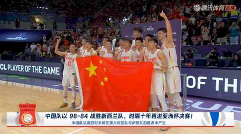
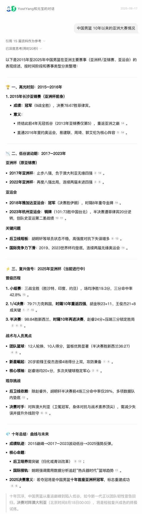
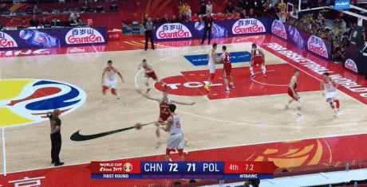
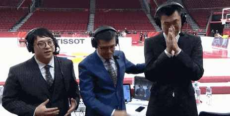
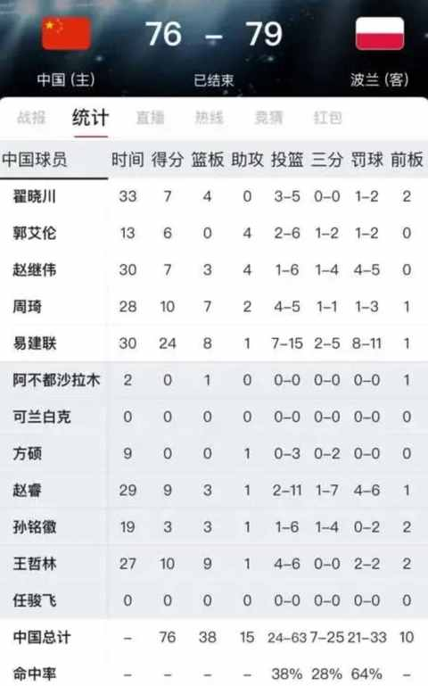
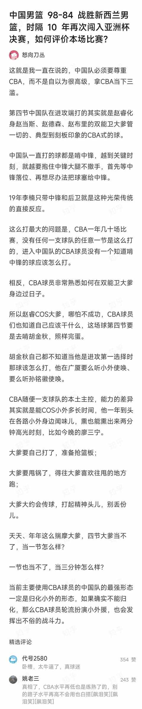
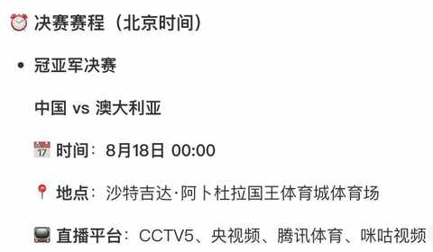

谁能想到，中国男篮上次进亚洲杯决赛居然是 10 年前……
约斯特普通
2025-08-17
一、真的有十年
昨天晚上比赛刚结束，直播画面里面就出现一个显目的标题：
中国对以 98-84 战胜新西兰队，时隔十年再进亚洲杯决赛！
一时间，人都有点恍惚。

仔细检索一番之后，才发现真的有十年，上次夺冠是在 2015年长沙亚锦赛，9 战全胜。
2017 年赛事更名为“国际篮联亚洲杯”后，正式改为四年一届。

二、发生在 6 年前的意难平
距离当下 2025 年更近的 2019 年的一场比赛，几乎是所有篮球迷心中的意难平：输了一场几乎要赢的比赛，现场演绎煮熟的鸭子怎么飞走的！
周琦致命的发球失误：

姚主席不得不摇头：
前男篮队员王仕鹏在解说后失控痛哭：

那场比赛的槽点几乎都集中在最后的一分钟里面，从比分领先到主动犯规，再到边线球发球失误再到加时赛输球！

这是一场对于中国男篮极其重要的比赛，是承上启下的关键一战：既失去了 奥运会参赛资格又关联到在国际赛场上队员的新老交替和国际赛场的历练。
三、不一样的精气神
本次亚洲杯的比赛男篮所呈现出来的精气神着实不一样，比赛中所呈现出来的每球必争的拼劲和更贴近国际篮球的打法都能让人在比赛中感受到。
此处不得不贴一下知乎网友的回答：

决赛就要来了，期待这支不一样的中国男篮的表现。
